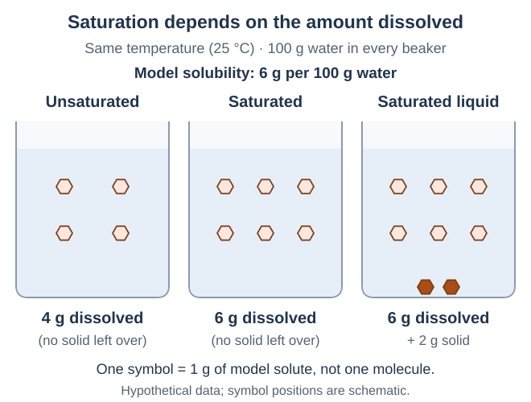
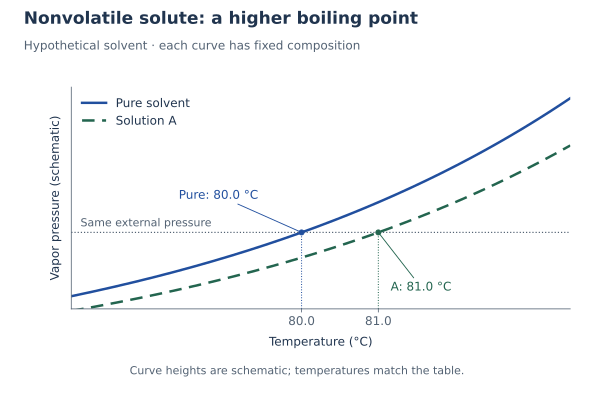
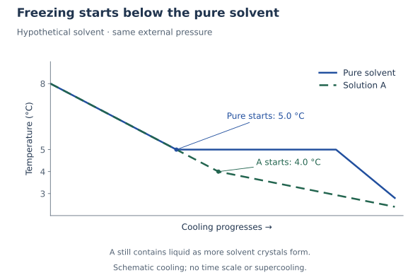
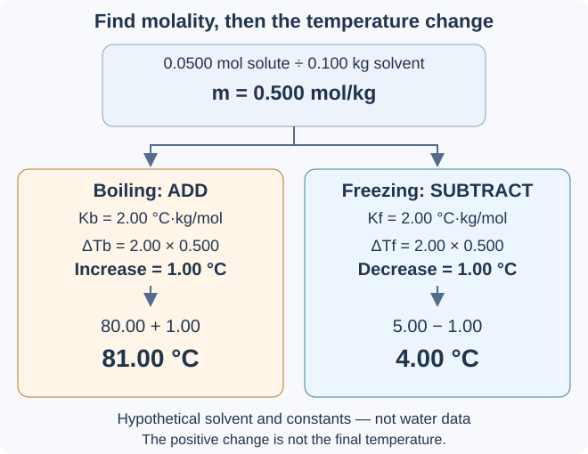

อ่านทีละช่วง แล้วลองตอบก่อนเปิดเฉลย: เริ่มจากแยกองค์ประกอบ ดูแรงที่ช่วยให้ละลาย แยกปริมาณที่ละลายได้ออกจากความเร็วในการละลาย แล้วเปรียบเทียบความดันไอ จุดเดือด และจุดเยือกแข็ง ต่อด้วยโมแลลิตีและการคำนวณอุณหภูมิที่เปลี่ยนไป
1. ตัวถูกละลาย ตัวทำละลาย และสารละลาย
สารละลาย คือสารผสมเนื้อเดียวที่มีองค์ประกอบกระจายสม่ำเสมอ ตัวทำละลาย เป็นตัวกลางที่สารอื่นกระจายอยู่ ส่วน ตัวถูกละลาย คือสารที่กระจายอยู่ในตัวกลางนั้น เมื่อน้ำตาลละลายในน้ำ น้ำตาลยังอยู่เป็นโมเลกุล ไม่ได้หายไป สารละลายมีได้ทั้งสถานะของแข็ง ของเหลว และแก๊ส
วิธีดูในตัวอย่างพื้นฐาน: ถ้าองค์ประกอบมีสถานะต่างกัน ให้ดูสารที่มีสถานะเดียวกับสารละลาย; ถ้ามีสถานะเดียวกัน โดยทั่วไปถือว่าสารที่มีปริมาณมากกว่าเป็นตัวทำละลาย
| ตัวอย่าง | แยกองค์ประกอบ |
|---|---|
| น้ำตาล 10 g ละลายหมดในน้ำ 90 g | น้ำตาลเป็นตัวถูกละลาย น้ำเป็นตัวทำละลาย ได้สารละลาย 100 g ถ้าไม่มีสารสูญหาย |
| เอทานอล 20 g ผสมกับน้ำ 80 g เป็นเนื้อเดียว | ทั้งคู่เป็นของเหลว น้ำมีมากกว่าจึงเป็นตัวทำละลาย เอทานอลเป็นตัวถูกละลายในตัวอย่างนี้ |
| ทองเหลืองเนื้อเดียวที่มีทองแดงมากกว่าสังกะสี | เป็นสารละลายของแข็ง ทองแดงเป็นตัวทำละลาย สังกะสีเป็นตัวถูกละลาย |
| อากาศแห้งสะอาด | เป็นสารละลายแก๊ส ไนโตรเจนมีปริมาณมากที่สุดจึงเป็นตัวทำละลาย ออกซิเจนและแก๊สอื่นเป็นตัวถูกละลาย |
คำถาม 1 — สารที่ละลายยังอยู่ที่ไหน
ก. น้ำตาล 10 g ละลายหมดในน้ำ 90 g โดยไม่มีสารสูญหาย ระบุตัวถูกละลาย ตัวทำละลาย และมวลสารละลาย
ข. เอทานอล 20 g ผสมกับน้ำ 80 g สารใดเป็นตัวทำละลาย และใช้ข้อมูลใดตัดสิน?
ค. เมื่อน้ำตาลละลายจนมองไม่เห็น น้ำตาลหายไปหรือไม่? สารละลายทุกชนิดต้องเป็นของเหลวหรือไม่ ยกตัวอย่างประกอบ
ก. น้ำตาลเป็นตัวถูกละลาย น้ำเป็นตัวทำละลาย มวลสารละลาย = 10 + 90 = 100 g โดยนับทั้งสองส่วนที่อยู่ในสารละลาย
ข. น้ำเป็นตัวทำละลาย ทั้งสองเป็นของเหลวเหมือนกัน แต่ในตัวอย่างนี้น้ำมีมวลมากกว่า เอทานอลจึงเป็นตัวถูกละลาย
ค. น้ำตาลยังอยู่เป็นโมเลกุลที่กระจายระหว่างโมเลกุลน้ำ จึงมองไม่เห็นผลึกเดิม สารละลายไม่จำเป็นต้องเป็นของเหลว เช่น อากาศแห้งสะอาดเป็นสารละลายแก๊ส
2. ดูโครงสร้างเพื่ออธิบายการละลาย
น้ำเป็นโมเลกุลมีขั้ว คือมีด้านบวกและลบบางส่วน การละลายต้องแยกอนุภาคจากเพื่อนเดิม แล้วให้ตัวถูกละลายอยู่ร่วมกับตัวทำละลาย จึงต้องเทียบแรงดึงดูด 3 คู่: ตัวถูกละลายด้วยกัน ตัวทำละลายด้วยกัน และระหว่างสองฝ่าย พร้อมพิจารณาการกระจายตัว คำว่า “คล้ายกันละลายกัน” ช่วยทำนายได้ แต่ต้องดูทั้งโมเลกุลและโครงสร้างของสารด้วย
พันธะไฮโดรเจนในตัวอย่างพื้นฐาน: ฝ่ายให้มีไฮโดรเจนต่อโดยตรงกับไนโตรเจน ออกซิเจน หรือฟลูออรีน ส่วนฝ่ายรับมีคู่อิเล็กตรอนที่ไม่ร่วมพันธะ หรือ คู่โดดเดี่ยว ที่เหมาะสมและพร้อมรับ การเกิดแรงนี้กับน้ำมักช่วยให้ละลายได้ดีขึ้น สารโมเลกุลยังมีแรงลอนดอนจากการกระจายอิเล็กตรอนที่เปลี่ยนไปชั่วขณะอยู่ด้วย ตารางนี้เน้นจุดที่ใช้แยกการละลาย ไม่ได้ระบุแรงทั้งหมด:
| สารที่เทียบกับน้ำ | เหตุผลสำคัญ |
|---|---|
| เมทานอล CH3OH, ไฮโดรเจนฟลูออไรด์ HF และกรดแอซีติก CH3COOH | สร้างพันธะไฮโดรเจนกับน้ำได้ เมทานอลและกรดแอซีติกมี O–H เป็นผู้ให้ ส่วน HF มี H–F; มีตำแหน่งรับที่เหมาะสม เช่น O ใน C=O ของกรดแอซีติก ทั้งสามละลายน้ำได้ โดยกรดอาจเกิดไอออนร่วมด้วย |
| เฮกเซน C6H14: โมเลกุลไม่มีขั้ว | ไม่มีตำแหน่งให้หรือรับพันธะไฮโดรเจนกับน้ำตามเกณฑ์นี้ ละลายเข้ากับน้ำได้น้อยและแยกชั้นเมื่อมีมากพอ แต่ไม่ได้หมายความว่าไม่มีแรงดึงดูดระหว่างกันเลย |
| ซิลิกา SiO2 ในควอตซ์ | เป็นโครงร่างพันธะต่อเนื่อง ไม่ใช่โมเลกุลเล็กแยกกัน ละลายน้ำได้น้อยมากในสภาวะทั่วไป การมี O ในสูตรจึงไม่ได้รับรองว่าจะละลายน้ำได้ดี |
คำถาม 2 — ตรวจแรงและโครงสร้างให้ครบ
ก. ทำไมเมทานอลจึงเข้ากับน้ำได้ดีกว่าเฮกเซน? ระบุแรงที่ช่วยอธิบาย และบอกว่าเฮกเซนกับน้ำไม่มีแรงดึงดูดกันเลยได้หรือไม่
ข. HF กับ CH3COOH มีพันธะใดเป็นตำแหน่งให้พันธะไฮโดรเจน? ทั้งสองสร้างพันธะไฮโดรเจนระหว่างโมเลกุลชนิดเดียวกันได้หรือไม่?
ค. นักเรียนบอกว่า “มี O ในสูตรก็ต้องละลายน้ำได้ดี” ใช้ซิลิกาอธิบายว่าทำไมต้องดูโครงสร้างเพิ่มเติม
ก. เมทานอลสร้างพันธะไฮโดรเจนกับน้ำได้ เฮกเซนทำไม่ได้ตามเกณฑ์พื้นฐานนี้ จึงเข้ากับน้ำได้น้อยกว่า แต่เฮกเซนกับน้ำยังมีแรงดึงดูดบางชนิด ต้องเทียบแรงเดิมกับแรงระหว่างสองฝ่าย ไม่สรุปว่าไม่มีแรงเลย
ข. HF ให้ผ่าน H–F ส่วน CH3COOH ให้ผ่าน O–H ทั้งคู่มีตำแหน่งรับที่เหมาะสม จึงเกิดพันธะไฮโดรเจนระหว่างโมเลกุลชนิดเดียวกันได้ แรงลอนดอนยังมีอยู่ด้วย
ค. ซิลิกามี O แต่เป็นโครงร่างพันธะต่อเนื่องที่ละลายน้ำได้น้อยมากในสภาวะทั่วไป ต้องดูว่ามีโมเลกุลแยกกันหรือเป็นโครงร่าง และต้องเอาชนะแรงหรือพันธะใดเพื่อแยกอนุภาค
3. ละลายได้มากกับละลายเร็วเป็นคนละเรื่อง
สภาพละลายได้ บอกปริมาณสูงสุดที่ละลายได้ ณ เงื่อนไขที่ระบุ เมื่อถึง สมดุล ปริมาณที่ละลายไม่เปลี่ยนไปสุทธิ แม้อนุภาคยังเคลื่อนที่อยู่ ไม่อิ่มตัว คือยังละลายเพิ่มได้; อิ่มตัว คือถึงค่าสูงสุดแล้ว แม้ไม่มีของแข็งเหลือให้เห็น ส่วน อิ่มตัวยิ่งยวด มีตัวถูกละลายมากกว่าค่าสมดุลและอาจตกผลึกได้ง่าย ถ้ามีของแข็งเกินเหลือก้นภาชนะ ให้นับเฉพาะส่วนที่ละลายจริงเป็นตัวถูกละลายในสารละลาย
ละลายเร็ว บอกเวลาที่ใช้ ไม่ใช่ปริมาณสูงสุด การคนหรือบดมักช่วยให้ของแข็งละลายเร็วขึ้น แต่ไม่เพิ่มค่าสภาพละลายได้เมื่ออุณหภูมิและเงื่อนไขอื่นคงเดิม ส่วนการเปลี่ยนอุณหภูมิหรือความดันอาจเปลี่ยนค่าสมดุลได้:
| สิ่งที่เปลี่ยน | ผลที่ควรแยกให้ได้ |
|---|---|
| คนหรือบดของแข็งให้ละเอียด | ช่วยให้ละลายเร็วขึ้น; เมื่อถึงสมดุลที่เงื่อนไขเดิม ปริมาณสูงสุดเท่าเดิม |
| เพิ่มอุณหภูมิ | ของแข็งหลายชนิดละลายได้มากขึ้น แต่ไม่ใช่ทุกชนิด ต้องดูข้อมูล ส่วนแก๊สในของเหลวโดยทั่วไปละลายได้น้อยลงเมื่ออุ่นขึ้นที่ความดันแก๊สเดิม |
| เพิ่มความดันของแก๊สชนิดนั้นเหนือของเหลว | โดยทั่วไปช่วยให้แก๊สละลายได้มากขึ้นที่อุณหภูมิเดิม ผลนี้เด่นสำหรับแก๊ส มากกว่าตัวถูกละลายของแข็งทั่วไป |

คำถาม 3 — นับส่วนที่ละลายจริงและตรวจเงื่อนไข
ก. สารสมมติละลายได้สูงสุด 6 g ต่อน้ำ 100 g ที่ 25 °C ถ้าเติมสาร 5 g ลงในน้ำ 50 g แล้วรอถึงสมดุลที่อุณหภูมิเดิม จะละลายกี่กรัม เหลือของแข็งกี่กรัม และส่วนของเหลวอิ่มตัวหรือไม่?
ข. สารละลายใสที่ไม่มีของแข็งก้นภาชนะต้องไม่อิ่มตัวเสมอหรือไม่? แยกอิ่มตัวกับอิ่มตัวยิ่งยวดโดยใช้ปริมาณที่ละลายจริงเทียบกับค่าสมดุล
ค. การคนทำให้ปริมาณสูงสุดที่ละลายได้เพิ่มขึ้นหรือไม่? การอุ่นทำให้แก๊สละลายในน้ำได้มากขึ้นเสมอหรือไม่ และความดันของแก๊สมีผลอย่างไร?
ก. น้ำ 50 g รับได้สูงสุด 6 × 50/100 = 3 g จึงละลาย 3 g และเหลือของแข็ง 5 − 3 = 2 g ส่วนของเหลวเป็นสารละลายอิ่มตัว เศษของแข็งไม่รวมอยู่ในมวลของส่วนที่ละลาย
ข. ไม่เสมอ สารละลายอิ่มตัวอาจใสและไม่มีของแข็งเหลือได้ อิ่มตัวมีปริมาณละลายเท่าค่าสมดุล ส่วนอิ่มตัวยิ่งยวดมีมากกว่าค่าสมดุล จึงอาจตกผลึกได้ง่าย
ค. การคนช่วยให้ละลายเร็วขึ้น แต่ไม่เพิ่มปริมาณสูงสุดที่เงื่อนไขเดิม การอุ่นโดยทั่วไปทำให้แก๊สละลายได้น้อยลงเมื่อความดันแก๊สคงเดิม ส่วนการเพิ่มความดันของแก๊สชนิดนั้นเหนือของเหลวโดยทั่วไปทำให้ละลายได้มากขึ้นที่อุณหภูมิเดิม
4. สมบัติคอลลิเกทีฟ: ดูจำนวนอนุภาคที่ละลาย
ตัวทำละลายบริสุทธิ์ มีสารชนิดเดียว ส่วน สารละลาย มีตัวถูกละลายกระจายอยู่ด้วย สมบัติคอลลิเกทีฟ คือการเปลี่ยนสมบัติที่ขึ้นกับจำนวนอนุภาคตัวถูกละลายเทียบกับปริมาณตัวทำละลาย เช่น ความดันไอ จุดเดือด และจุดเยือกแข็ง การเปรียบเทียบต้องใช้ตัวทำละลายชนิดเดียวกันและระบุปริมาณให้ตรงกัน มวลตัวถูกละลายเท่ากันไม่ได้รับรองว่ามีจำนวนอนุภาคเท่ากัน
ชุดข้อมูลสมมติสำหรับช่วง 4–6: ใช้ตัวทำละลายสมมติชนิดเดียวกัน มวลเท่ากัน และเปรียบเทียบที่ความดันภายนอกเดียวกัน ให้สารละลายเจือจางเป็นไปตามแบบจำลอง ตัวถูกละลายละลายหมด ยังเป็นโมเลกุลแยกเดิม และ ระเหยยาก คือเปลี่ยนเป็นไอได้น้อยมากในเงื่อนไขนี้ ตัวเลข “หน่วยอนุภาค” ในตารางใช้เทียบสัดส่วน ไม่ใช่กรัมหรือจำนวนโมเลกุลจริง:
| ตัวอย่างที่ใช้เปรียบเทียบ | ตัวถูกละลายในตัวทำละลายมวลเท่ากัน |
|---|---|
| ตัวทำละลายบริสุทธิ์ | ไม่มีตัวถูกละลาย: 0 หน่วยอนุภาค |
| สารละลาย A | กลูโคส 4 หน่วยอนุภาค |
| สารละลาย B | กลูโคส 8 หน่วยอนุภาค |
| สารละลาย C | ซูโครส 4 หน่วยอนุภาค |
คำถาม 4 — คุมเงื่อนไขก่อนเปรียบเทียบ
ก. A กับ B ใช้ตัวถูกละลายชนิดเดียวกัน ตัวอย่างใดมีจำนวนอนุภาคต่อปริมาณตัวทำละลายมากกว่า และมากกว่ากี่เท่า?
ข. A กับ C ใช้ตัวถูกละลายต่างชนิด แต่มีจำนวนอนุภาคเท่ากัน คาดว่าการเปลี่ยนสมบัติคอลลิเกทีฟเท่ากันหรือไม่ตามเงื่อนไขที่กำหนด? ถ้าทราบเพียงมวลตัวถูกละลายเท่ากันจะสรุปเช่นนี้ได้เลยหรือไม่?
ค. ถ้าตัวอย่างหนึ่งเปลี่ยนชนิดตัวทำละลาย หรือใช้ตัวทำละลายมากขึ้น แม้มีตัวถูกละลาย 4 หน่วยอนุภาคเหมือน A จะสรุปว่าผลเท่า A ได้เลยหรือไม่?
ก. B มี 8 หน่วย เทียบกับ A ที่มี 4 หน่วย เมื่อใช้ตัวทำละลายมวลเท่ากัน B จึงมีอนุภาคต่อปริมาณตัวทำละลายมากกว่า 2 เท่า
ข. A กับ C คาดว่าเปลี่ยนเท่ากันในแบบจำลองนี้ เพราะชนิดและมวลตัวทำละลาย รวมถึงจำนวนอนุภาคตัวถูกละลายเท่ากัน แต่การทราบมวลตัวถูกละลายเท่ากันอย่างเดียวยังไม่พอ สารต่างชนิดอาจมีมวลต่อโมเลกุลต่างกัน จึงมีจำนวนโมเลกุลไม่เท่ากัน
ค. ยังสรุปไม่ได้ ชนิดตัวทำละลายมีผลต่อค่าที่เปลี่ยน ส่วนการเพิ่มปริมาณตัวทำละลายทำให้อนุภาคตัวถูกละลายกระจายอยู่ในตัวทำละลายมากขึ้น จึงต้องเทียบจำนวนอนุภาคต่อปริมาณตัวทำละลายด้วย
5. ความดันไอเชื่อมกับจุดเดือดอย่างไร
ความดันไอ คือความดันของไอที่สมดุลกับของเหลวในภาชนะปิด ณ อุณหภูมิหนึ่ง อัตรากลายเป็นไอกับอัตราควบแน่นเท่ากัน แต่อนุภาคยังเคลื่อนที่อยู่ เมื่อมีตัวถูกละลายระเหยยากตามแบบจำลองช่วง 4 ความดันไอของตัวทำละลายจะต่ำกว่าของสารบริสุทธิ์ที่อุณหภูมิเดียวกัน เมื่อเพิ่มอุณหภูมิ ความดันไอจะสูงขึ้น
จุดเดือด คืออุณหภูมิที่ความดันไอเท่ากับความดันภายนอก สารละลายจึงต้องร้อนขึ้นอีกเพื่อถึงจุดนี้ เรียกว่า การเพิ่มขึ้นของจุดเดือด ต้องเทียบที่ความดันภายนอกเดียวกัน และใช้เงื่อนไขตัวถูกละลายระเหยยาก ถ้าตัวถูกละลายระเหยได้มาก เช่น เอทานอล ต้องพิจารณาไอของทั้งสองสารด้วย เมื่อเดือดนานจนตัวทำละลายระเหยออก ความเข้มข้นและจุดเดือดของส่วนที่เหลืออาจเปลี่ยน
| ข้อมูลสมมติที่ความดันภายนอกเดียวกัน | จุดเดือดเริ่มต้น |
|---|---|
| ตัวทำละลายบริสุทธิ์ | 80.0 °C |
| A และ C: 4 หน่วยอนุภาค | 81.0 °C |
| B: 8 หน่วยอนุภาค | 82.0 °C |

คำถาม 5 — อ่านจุดตัด แล้วแยกอุณหภูมิกับผลต่าง
ก. ตามกราฟ ที่อุณหภูมิเดียวกัน A กับตัวทำละลายบริสุทธิ์ ใครมีความดันไอต่ำกว่า? ตอนสมดุลของเหลว–ไอ อนุภาคหยุดเคลื่อนที่หรือไม่?
ข. A เริ่มเดือดที่เท่าไร และมีจุดเดือดเพิ่มจากตัวทำละลายบริสุทธิ์กี่องศา? เรียงจุดเดือดของตัวทำละลายบริสุทธิ์ A, B และ C
ค. ถ้าใช้เอทานอลซึ่งระเหยได้เป็นตัวถูกละลาย จะใช้ข้อสรุปว่าเติมตัวถูกละลายแล้วจุดเดือดต้องสูงขึ้นจากแบบจำลองนี้ทันทีได้หรือไม่ เพราะอะไร?
ก. A มีความดันไอต่ำกว่าที่อุณหภูมิเดียวกัน สมดุลหมายถึงอัตรากลายเป็นไอเท่ากับอัตราควบแน่น ไม่ใช่อนุภาคหยุดเคลื่อนที่
ข. A มีจุดเดือด 81.0 °C และเพิ่มขึ้น 81.0 − 80.0 = 1.0 °C ลำดับคือ ตัวทำละลายบริสุทธิ์ < A = C < B ต้องแยกค่าจุดเดือดออกจากค่าที่เพิ่มขึ้น
ค. ไม่ได้ทันที แบบจำลองนี้ใช้ตัวถูกละลายระเหยยาก แต่เอทานอลให้ไอได้มาก จึงต้องพิจารณาความดันไอจากทั้งตัวถูกละลายและตัวทำละลาย รวมถึงองค์ประกอบของส่วนผสม
6. จุดเยือกแข็งลดลง และเริ่มเกิดผลึกที่ใด
จุดเยือกแข็ง ในที่นี้หมายถึงอุณหภูมิเริ่มเกิดผลึกตัวทำละลายเมื่อทำให้เย็นลงตามสมดุล ให้ตัวถูกละลายยังอยู่ในของเหลวและไม่เข้าไปอยู่ในผลึกตัวทำละลาย สารละลายจึงมีจุดเริ่มเยือกแข็งต่ำกว่าตัวทำละลายบริสุทธิ์ เรียกว่า การลดลงของจุดเยือกแข็ง จำนวนอนุภาคมากขึ้นในตัวทำละลายมวลเท่าเดิมทำให้ลดลงมากขึ้นตามแบบจำลองนี้
อ่านจุดเริ่ม ไม่ใช่จุดต่ำสุดปลายกราฟ: เมื่อผลึกตัวทำละลายแยกออก ตัวถูกละลายยังอยู่ในส่วนของเหลว จึงทำให้ของเหลวเข้มข้นขึ้น อุณหภูมิระหว่างเกิดผลึกจึงอาจค่อย ๆ ลดลง ไม่ต้องราบตลอดช่วงเหมือนสารบริสุทธิ์ กราฟตัวอย่างตัดเรื่องการเย็นต่ำกว่าจุดเยือกแข็งก่อนเกิดผลึกออก เพื่อให้เห็นจุดเริ่มชัดเจน
| ชุดข้อมูลสมมติเดิมที่ความดันเดียวกัน | จุดเริ่มเยือกแข็ง |
|---|---|
| ตัวทำละลายบริสุทธิ์ | 5.0 °C |
| A และ C: 4 หน่วยอนุภาค | 4.0 °C |
| B: 8 หน่วยอนุภาค | 3.0 °C |

คำถาม 6 — ดูจุดเริ่มและเหตุผลของเส้นกราฟ
ก. เรียงจุดเริ่มเยือกแข็งของตัวทำละลายบริสุทธิ์ A, B และ C จากสูงไปต่ำ ตัวอย่างใดเริ่มเกิดผลึกที่อุณหภูมิสูงสุด?
ข. A มีจุดเยือกแข็งลดลงกี่องศาจากตัวทำละลายบริสุทธิ์ และมีจุดเยือกแข็งจริงเท่าไร? คำว่า “ลดลง” บังคับว่าอุณหภูมิต้องติดลบหรือไม่?
ค. ทำไมเส้นของ A หลังเริ่มเกิดผลึกจึงค่อย ๆ ลดลงได้? จุดต่ำสุดปลายเส้นเป็นจุดเริ่มเยือกแข็งของ A หรือไม่?
ก. ตัวทำละลายบริสุทธิ์ 5.0 °C > A = C ที่ 4.0 °C > B ที่ 3.0 °C ตัวทำละลายบริสุทธิ์เริ่มเกิดผลึกที่อุณหภูมิสูงสุด
ข. ลดลง 5.0 − 4.0 = 1.0 °C แต่จุดเยือกแข็งของ A คือ 4.0 °C ซึ่งยังเป็นบวก “ลดลง” หมายถึงต่ำกว่าค่าเริ่มต้น ไม่ได้บังคับว่าต้องต่ำกว่า 0 °C
ค. ผลึกแยกตัวทำละลายออกจากของเหลว ขณะที่ตัวถูกละลายยังอยู่ ทำให้ของเหลวเข้มข้นขึ้นและเยือกแข็งต่อที่อุณหภูมิต่ำลง จุดเริ่มของ A คือ 4.0 °C ไม่ใช่อุณหภูมิต่ำสุดปลายเส้น
7. โมแลลิตี: โมลของตัวถูกละลายต่อกิโลกรัมตัวทำละลาย
โมแลลิตี ใช้สัญลักษณ์ m บอกจำนวนโมลของตัวถูกละลายในตัวทำละลาย 1 kg หน่วยคือ mol/kg ส่วน n คือจำนวนโมลของตัวถูกละลาย หน่วย mol จึงคำนวณได้จาก n = มวลตัวถูกละลาย (g) ÷ มวลต่อโมล (g/mol) แล้วหา m = n ÷ มวลตัวทำละลาย (kg) แปลง g เป็น kg โดยหาร 1000 ถ้าให้มวลสารละลายมา ต้องหักมวลตัวถูกละลายก่อน
อย่าสลับ m กับ M: M ตัวใหญ่คือ โมลาริตี หน่วย mol/L ของสารละลาย ส่วน m ใช้ kg ของตัวทำละลาย โมแลลิตีใช้มวลจึงไม่เปลี่ยนเพียงเพราะอุณหภูมิเปลี่ยน ถ้าไม่มีสารสูญหายหรือเกิดปฏิกิริยา แต่โมลาริตีอาจเปลี่ยนตามปริมาตร ตัวอย่างต่อไปให้กลูโคส 9.00 g มวลต่อโมล 180 g/mol ละลายหมดในตัวทำละลายสมมติเดิม 100 g:
| ขั้น | แทนค่า |
|---|---|
| 1. หาโมลตัวถูกละลาย | n = 9.00 ÷ 180 = 0.0500 mol |
| 2. แปลงมวลตัวทำละลาย | 100 g ÷ 1000 = 0.100 kg ไม่ใช้มวลสารละลาย 109 g |
| 3. หาโมแลลิตี | m = 0.0500 ÷ 0.100 = 0.500 mol/kg หรือ 0.500 m |
คำถาม 7 — เลือกตัวหารให้ถูก
ก. ยูเรีย 6.00 g มีมวลต่อโมล 60.0 g/mol ละลายหมดในน้ำ 250 g จงหา n และ m
ข. สารละลายยูเรีย 106 g มีตัวถูกละลาย 6.00 g มวลต่อโมล 60.0 g/mol ส่วนที่เหลือเป็นน้ำ จงหามวลตัวทำละลายและโมแลลิตี
ค. 0.500 m กับ 0.500 M ใช้มวลหรือปริมาตรของสารส่วนใดเป็นฐาน? บอกว่าเข้มข้นเท่ากันได้ทันทีหรือไม่?
ก. n = 6.00 ÷ 60.0 = 0.100 mol น้ำ 250 g = 0.250 kg จึงได้ m = 0.100 ÷ 0.250 = 0.400 mol/kg
ข. มวลน้ำ = 106 − 6.00 = 100 g = 0.100 kg; n = 6.00 ÷ 60.0 = 0.100 mol จึงได้ m = 0.100 ÷ 0.100 = 1.00 mol/kg ไม่หารด้วยมวลสารละลาย 0.106 kg
ค. 0.500 m คือ 0.500 mol ต่อตัวทำละลาย 1 kg; 0.500 M คือ 0.500 mol ต่อสารละลาย 1 L ฐานต่างกัน จึงยังบอกว่าเข้มข้นเท่ากันไม่ได้ ต้องมีข้อมูลเชื่อมมวลกับปริมาตร เช่น ความหนาแน่น
8. จุดเดือดเพิ่มเท่าไร แล้วเดือดที่กี่องศา?
ΔTb อ่านว่าเดลตาทีบี คือจำนวนองศาที่จุดเดือดเพิ่มขึ้น หน่วย °C ส่วน Kb คือค่าคงที่การเพิ่มจุดเดือดของตัวทำละลาย หน่วย °C·kg/mol ใช้กับโมแลลิตี m จากช่วงก่อน: ΔTb = Kb × m แล้วหา จุดเดือดสารละลาย = จุดเดือดตัวทำละลายบริสุทธิ์ + ΔTb คูณหน่วย (°C·kg/mol) × (mol/kg) แล้วเหลือ °C
เงื่อนไขรอบนี้: สารละลายเจือจางที่ใช้แบบจำลองอุดมคติ ตัวถูกละลายไม่ระเหย ละลายหมด และยังอยู่เป็นโมเลกุลแยกกัน ไม่แตกเป็นไอออนหรือรวมกลุ่ม เปรียบเทียบที่ความดันภายนอกเท่ากัน ตัวอย่างใช้ m = 0.500 mol/kg จากช่วง 7 กำหนดให้ตัวทำละลายสมมติมี Kb = 2.00 °C·kg/mol และจุดเดือดบริสุทธิ์ 80.00 °C ตัวเลขชุดนี้ไม่ใช่ค่าของน้ำ:
| สิ่งที่หา | วิธีคิด |
|---|---|
| จุดเดือดเพิ่มกี่องศา | ΔTb = 2.00 × 0.500 = 1.00 °C |
| สารละลายเริ่มเดือดที่กี่องศา | 80.00 + 1.00 = 81.00 °C สอดคล้องกับค่า 81.0 °C ในตัวอย่าง A ของช่วง 5 |
คำถาม 8 — หาค่าที่เพิ่มก่อนนำไปบวก
ก. ใช้เงื่อนไขและตัวทำละลายสมมติข้างต้น ยูเรีย 3.00 g มวลต่อโมล 60.0 g/mol ละลายในตัวทำละลาย 200 g จงหา m, ΔTb และจุดเดือดเริ่มต้นของสารละลาย
ข. สารละลายอีกชุดในตัวทำละลายสมมติเดิมมี m = 0.750 mol/kg จงหา ΔTb และจุดเดือดเริ่มต้น
ค. ถ้าเปลี่ยนตัวทำละลายเป็นเอทานอล ใช้ Kb ของน้ำแทนได้หรือไม่? ถ้าตัวถูกละลายระเหยได้ ใช้สูตรข้างต้นโดยตรงได้หรือไม่?
ก. n = 3.00 ÷ 60.0 = 0.0500 mol; ตัวทำละลาย 200 g = 0.200 kg จึงได้ m = 0.250 mol/kg; ΔTb = 2.00 × 0.250 = 0.500 °C จุดเดือดเริ่มต้น = 80.00 + 0.500 = 80.50 °C เมื่อปัดเป็นทศนิยมสองตำแหน่ง
ข. ΔTb = 2.00 × 0.750 = 1.50 °C จุดเดือดเริ่มต้น = 80.00 + 1.50 = 81.50 °C ค่าที่เพิ่มกับจุดเดือดจริงเป็นคนละค่า
ค. ไม่ได้ ต้องใช้ค่าของตัวทำละลายที่โจทย์ระบุ และใช้จุดเดือดบริสุทธิ์ที่ความดันเดียวกัน ถ้าตัวถูกละลายระเหยได้ ต้องพิจารณาไอของทั้งสองสาร จึงใช้สูตรสำหรับตัวถูกละลายไม่ระเหยนี้โดยตรงไม่ได้
9. จุดเยือกแข็งลดเท่าไร แล้วเริ่มแข็งที่กี่องศา?
ΔTf อ่านว่าเดลตาทีเอฟ คือจำนวนองศาที่จุดเยือกแข็งลดลง หน่วย °C กำหนดให้เป็นค่าบวก ส่วน Kf คือค่าคงที่การลดจุดเยือกแข็งของตัวทำละลาย หน่วย °C·kg/mol ใช้ ΔTf = Kf × m แล้วหา จุดเยือกแข็งสารละลาย = จุดเยือกแข็งตัวทำละลายบริสุทธิ์ − ΔTf ค่าที่ลดเป็นบวกได้ แม้อุณหภูมิที่ได้จะเป็นบวกหรือลบ
เงื่อนไข: ใช้แบบจำลองสารละลายเจือจาง ตัวถูกละลายละลายหมด ไม่แตกตัวหรือรวมกลุ่ม และไม่เข้าไปอยู่ในผลึกตัวทำละลาย คำนวณอุณหภูมิเริ่มเกิดผลึกจากความเข้มข้นเริ่มต้น ไม่ใช่จุดที่สารละลายแข็งหมด ตัวอย่างใช้ m = 0.500 mol/kg เดิม กำหนดให้ตัวทำละลายสมมติมี Kf = 2.00 °C·kg/mol และจุดเยือกแข็งบริสุทธิ์ 5.00 °C ที่ความดันเดียวกัน ไม่ใช่ค่าของน้ำ:
| สิ่งที่หา | วิธีคิด |
|---|---|
| จุดเยือกแข็งลดกี่องศา | ΔTf = 2.00 × 0.500 = 1.00 °C |
| สารละลายเริ่มเกิดผลึกที่กี่องศา | 5.00 − 1.00 = 4.00 °C สอดคล้องกับค่า 4.0 °C ในตัวอย่าง A ของช่วง 6 |

คำถาม 9 — หาค่าที่ลดก่อนนำไปลบ
ก. สารละลายในตัวทำละลายสมมติข้างต้นมี m = 0.750 mol/kg จงหา ΔTf และอุณหภูมิเริ่มเกิดผลึก
ข. เปลี่ยนเป็นสารละลายกลูโคสในน้ำ 0.500 mol/kg กำหนด Kf ของน้ำ = 1.86 °C·kg/mol และจุดเยือกแข็งน้ำบริสุทธิ์ = 0.00 °C ที่ 1 atm ใช้เงื่อนไขแบบจำลองข้างต้น จงหา ΔTf และจุดเยือกแข็งสารละลาย ตอบอุณหภูมิทศนิยมสองตำแหน่ง
ค. ตัวอย่างสมมติเริ่มจาก 5.00 °C แล้วสารละลายเริ่มเกิดผลึกที่ 4.00 °C ค่า ΔTf เป็น +1.00 หรือ −1.00 °C? หลังผลึกแยกออกมากขึ้น ยังใช้ m เริ่มต้นแทนความเข้มข้นของของเหลวที่เหลือได้ตลอดหรือไม่?
ก. ΔTf = 2.00 × 0.750 = 1.50 °C อุณหภูมิเริ่มเกิดผลึก = 5.00 − 1.50 = 3.50 °C ยังเป็นบวก แต่ต่ำกว่าตัวทำละลายบริสุทธิ์
ข. ΔTf = 1.86 × 0.500 = 0.930 °C ≈ 0.93 °C จุดเยือกแข็ง = 0.00 − 0.930 ≈ −0.93 °C ค่าที่ลดเป็นบวก ส่วนอุณหภูมิที่ได้เป็นลบ
ค. ΔTf = 5.00 − 4.00 = +1.00 °C เมื่อผลึกตัวทำละลายแยกออก ตัวถูกละลายยังอยู่ในของเหลว แต่มวลตัวทำละลายในของเหลวลดลง m จึงเพิ่ม ไม่ใช้ค่าเริ่มต้นแทนต่อไปตลอด สูตรด้วย m เริ่มต้นให้จุดเริ่มเกิดผลึก
แหล่งศึกษาต่อและตรวจสอบ
- สสวท. Project 14 — ความเข้มข้นของสารละลาย ตอนที่ 2 / Solution concentration, part 2
- สสวท. Project 14 — จุดเดือดของสารละลาย / Boiling points of solutions
- สสวท. Project 14 — จุดหลอมเหลวของสารละลาย / Melting points of solutions
- OpenStax Chemistry 2e 11.4 — Colligative properties and model conditions
- Cerritos College Chemistry — Reading pure-solvent and solution cooling curves
- สสวท. Project 14 — เคมี ม.4 เล่ม 2 / Chemistry Grade 10 Book 2
- OpenStax Chemistry 2e 11.1 — Solutions and their components
- OpenStax Chemistry 2e 11.3 — Saturation, temperature and gas pressure
- Purdue Chemistry — Solubility and molecular structure
- OpenStax Chemistry 2e 10.1 — Intermolecular attractions
Read one section, then answer before opening solutions: identify components, explain attractions, distinguish the amount that dissolves from how fast it dissolves, then compare vapor pressure, boiling point and freezing point. Then use molality to calculate boiling-point increases and freezing-point decreases.
1. Solute, solvent and solution
A solution is a uniform mixture with its components evenly spread throughout. The solvent is the medium in which other substances spread; those substances are solutes. Sugar dissolved in water remains as molecules rather than disappearing. Solutions can be solid, liquid or gas.
For these basic examples: when the components have different physical states, identify the component with the same state as the solution. When their states are the same, the component present in the greater amount is generally called the solvent.
| Example | Identify the components |
|---|---|
| 10 g sugar fully dissolved in 90 g water | Sugar is the solute; water is the solvent. The solution has a mass of 100 g if no material is lost. |
| 20 g ethanol mixed uniformly with 80 g water | Both are liquids. Water is present in the greater amount and is the solvent; ethanol is the solute in this example. |
| Uniform brass with more copper than zinc | A solid solution: copper is the solvent and zinc is the solute. |
| Clean, dry air | A gaseous solution. Nitrogen is the largest component and is called the solvent; oxygen and other gases are solutes. |
Question 1 — Where does the dissolved substance go?
a. 10 g sugar dissolves fully in 90 g water without any material loss. Identify the solute and solvent, and find the solution mass.
b. 20 g ethanol mixes with 80 g water. Which is the solvent, and what information supports your choice?
c. Has sugar disappeared when its crystals can no longer be seen? Must every solution be liquid? Give an example.
a. Sugar is the solute and water is the solvent. Solution mass = 10 + 90 = 100 g, including both components in the solution.
b. Water is the solvent. Both components are liquids, but water has the greater mass in this example. Ethanol is the solute.
c. Sugar remains as molecules spread among water molecules, so the original crystals are no longer visible. Solutions need not be liquid: clean, dry air is a gaseous solution.
2. Use structure to explain dissolving
Water is polar: it has partial positive and negative ends. Dissolving separates particles from their original neighbors and places solute among solvent particles. Compare 3 attraction pairs: solute–solute, solvent–solvent and solute–solvent, together with particle dispersal. “Like dissolves like” is a useful guide, but inspect the whole molecule and the substance’s structure.
For introductory hydrogen bonding: a donor has hydrogen bonded directly to nitrogen, oxygen or fluorine. An acceptor has a suitable available lone pair, a pair of electrons not used in a covalent bond. Such bonding with water often improves solubility. Molecular substances also retain London forces from temporary changes in electron distribution. This table highlights useful differences, rather than listing every interaction:
| Substance compared with water | Key explanation |
|---|---|
| Methanol CH3OH, hydrogen fluoride HF and acetic acid CH3COOH | Can hydrogen bond with water. Methanol and acetic acid donate through O–H; HF has H–F. Suitable acceptor sites are available, such as the C=O oxygen in acetic acid. All three dissolve in water; the acids can also form ions. |
| Hexane C6H14: nonpolar molecules | Has no hydrogen-bond donor or acceptor sites for water under this criterion. Mutual solubility is low; sufficient amounts form layers. This does not mean absolutely no attraction exists between them. |
| Silica SiO2 in quartz | A continuous bonded network, not separate small molecules. It has very low water solubility under ordinary conditions. O in a formula does not guarantee good water solubility. |
Question 2 — Check both attractions and structure
a. Why does methanol mix with water better than hexane? Name the helpful interaction. Is it correct to say hexane and water have no attraction at all?
b. Which bonds provide hydrogen-bond donors in HF and CH3COOH? Can each substance hydrogen bond with its own kind?
c. A student says, “O in the formula guarantees good water solubility.” Use silica to explain why structure must also be considered.
a. Methanol can hydrogen bond with water; hexane cannot under the introductory criterion, so it mixes less well. Some attractions still exist between hexane and water. Compare original and unlike attractions rather than claiming there are none.
b. HF donates through H–F, while CH3COOH donates through O–H. Each also has suitable acceptor sites and can self hydrogen bond. London forces remain present too.
c. Silica contains O but forms a continuous bonded network with very low water solubility under ordinary conditions. Check separate molecules versus a network and which attractions or bonds must be overcome to separate particles.
3. Dissolving more and dissolving faster are different
Solubility states the maximum amount that dissolves under stated conditions. At equilibrium, the dissolved amount has no net change, though particles still move. An unsaturated solution can dissolve more; a saturated solution has reached the limit, even without visible solid left over. A supersaturated solution contains more dissolved solute than the equilibrium limit and can crystallize readily. If excess solid remains at the bottom, count only the dissolved portion as solute within the solution.
Dissolving faster concerns time, not the maximum amount. Stirring or crushing a solid often speeds dissolution without increasing equilibrium solubility when temperature and other conditions stay the same. Temperature or pressure changes can alter the equilibrium limit:
| Change | Distinguish the effects |
|---|---|
| Stirring or crushing a solid | Helps it dissolve faster; the maximum equilibrium amount stays the same under the same conditions. |
| Increasing temperature | Many solids become more soluble, but not all: check the data. Gases generally become less soluble in liquids on warming at the same gas pressure. |
| Increasing that gas’s pressure above the liquid | Generally increases gas solubility at the same temperature. This effect is much more important for gases than for ordinary solid solutes. |
Question 3 — Count what dissolves and check the conditions
a. A model substance dissolves up to 6 g per 100 g water at 25 °C. Add 5 g to 50 g water and wait for equilibrium at the same temperature. How much dissolves, how much solid remains, and is the liquid saturated?
b. Must a clear solution without solid at the bottom be unsaturated? Distinguish saturated and supersaturated using the dissolved amount and equilibrium limit.
c. Does stirring increase the maximum amount that dissolves? Does warming always increase gas solubility in water, and how does gas pressure affect it?
a. 50 g water can dissolve up to 6 × 50/100 = 3 g. Thus 3 g dissolves and 5 − 3 = 2 g remains solid. The liquid is saturated. Undissolved solid is not included in the dissolved mass.
b. No. A saturated solution can be clear without leftover solid. Its dissolved amount equals the equilibrium limit. A supersaturated solution exceeds that limit and can crystallize readily.
c. Stirring speeds dissolution without raising the maximum under the same conditions. Warming generally lowers gas solubility at fixed gas pressure. Increasing that gas’s pressure above the liquid generally raises its solubility at the same temperature.
4. Colligative properties: count dissolved particles
A pure solvent contains one substance; a solution also contains dissolved solute. Colligative properties are changes that depend on solute particle number relative to solvent amount, such as vapor pressure, boiling point and freezing point. Compare the same solvent and specify its amount. Equal solute masses do not guarantee equal particle numbers.
Hypothetical examples for sections 4–6: use one hypothetical solvent, equal solvent masses and the same external pressure. Assume dilute solutions that follow the model. The solutes dissolve fully, remain separate molecules and are nonvolatile, meaning they form very little vapor under these conditions. The table's “particle units” compare proportions, not grams or actual molecule counts:
| Example being compared | Solute in equal masses of solvent |
|---|---|
| Pure solvent | No solute: 0 particle units |
| Solution A | Glucose: 4 particle units |
| Solution B | Glucose: 8 particle units |
| Solution C | Sucrose: 4 particle units |
Question 4 — Control conditions before comparing
a. A and B contain the same solute. Which has more solute particles per amount of solvent, and by what factor?
b. A and C contain different solutes but equal particle numbers. Should their colligative changes match under the stated conditions? Would equal solute masses alone establish this?
c. Another example has 4 particle units like A, but uses a different solvent or more solvent. Can you immediately conclude that its change equals A’s?
a. B has 8 units compared with A’s 4. With equal solvent masses, B has twice as many solute particles per amount of solvent.
b. A and C should have equal changes in this model because solvent identity, solvent mass and solute particle number match. Equal solute masses alone are insufficient: different substances can have different mass per molecule and therefore different molecule counts.
c. No. Solvent identity affects the change. More solvent also spreads the same solute particle number through a larger solvent amount. Compare particles per amount of solvent, not particle number alone.
5. How vapor pressure explains boiling point
Vapor pressure is the pressure of vapor in equilibrium with a liquid in a closed container at a stated temperature. Vaporization and condensation rates are equal, while particles keep moving. With a nonvolatile solute under the section 4 model, the solvent’s vapor pressure is lower than that of the pure solvent at the same temperature. Increasing temperature raises vapor pressure.
Boiling point is the temperature at which vapor pressure equals external pressure. The solution needs a higher temperature to reach this point: boiling-point elevation. Compare at the same external pressure and apply the nonvolatile-solute condition. A volatile solute such as ethanol also contributes vapor, so both components must be considered. Extended boiling can remove solvent and change the remaining solution’s concentration and boiling point.
| Hypothetical data at the same external pressure | Initial boiling point |
|---|---|
| Pure solvent | 80.0 °C |
| A and C: 4 particle units | 81.0 °C |
| B: 8 particle units | 82.0 °C |
Question 5 — Read intersections and separate temperature from change
a. At the same temperature, which has lower vapor pressure: A or pure solvent? Do particles stop moving at liquid–vapor equilibrium?
b. At what temperature does A start boiling, and how much higher is this than the pure solvent’s boiling point? Order the boiling points of pure solvent, A, B and C.
c. If volatile ethanol is used as the solute, can this model immediately establish that adding solute must raise the boiling point? Explain.
a. A has lower vapor pressure at the same temperature. Equilibrium means equal vaporization and condensation rates, not particles stopping.
b. A boils at 81.0 °C, an increase of 81.0 − 80.0 = 1.0 °C. The order is pure solvent < A = C < B. Distinguish the boiling temperature from its increase.
c. No. This model assumes a nonvolatile solute. Ethanol contributes appreciable vapor, so the vapor pressures of both solute and solvent and the mixture’s composition must be considered.
6. Freezing-point depression and the start of crystallization
Here, freezing point means the temperature at which solvent crystals begin to form on equilibrium cooling. Assume the solute remains in the liquid and does not enter the solvent crystals. The solution starts freezing below the pure solvent: freezing-point depression. More solute particles in the same solvent mass give a greater decrease under this model.
Read the start, not the lowest endpoint. As solvent crystals separate, the solute stays in the remaining liquid, making it more concentrated. Temperature during crystallization can therefore keep falling rather than stay flat throughout as in a pure substance. The example omits cooling below the freezing point before crystals form, so the start is clear.
| The same hypothetical examples at equal pressure | Initial freezing point |
|---|---|
| Pure solvent | 5.0 °C |
| A and C: 4 particle units | 4.0 °C |
| B: 8 particle units | 3.0 °C |
Question 6 — Find the start and explain the curve
a. Order the initial freezing points of pure solvent, A, B and C from highest to lowest. Which begins crystallizing at the highest temperature?
b. By how many degrees is A’s freezing point depressed, and what is its freezing temperature? Must a “decrease” mean a negative temperature?
c. Why can A’s curve keep falling after crystals begin to form? Is its lowest endpoint A’s initial freezing point?
a. Pure solvent 5.0 °C > A = C at 4.0 °C > B at 3.0 °C. Pure solvent starts crystallizing at the highest temperature.
b. The decrease is 5.0 − 4.0 = 1.0 °C, but A’s freezing temperature is 4.0 °C and remains positive. A decrease means lower than the starting value, not necessarily below 0 °C.
c. Crystals remove solvent from the liquid while solute remains. The liquid becomes more concentrated and freezes further at lower temperatures. A starts at 4.0 °C, not at the curve’s lowest endpoint.
7. Molality: moles of solute per kilogram of solvent
Molality, symbol m, gives the moles of solute per 1 kg of solvent, in mol/kg. n is the amount of solute in mol. First calculate n = solute mass (g) ÷ molar mass (g/mol), then m = n ÷ solvent mass (kg). Convert grams to kilograms by dividing by 1000. If given the solution mass, subtract the solute mass first.
Distinguish m from M: capital M means molarity, in mol/L of solution; m uses kg of solvent. Because molality uses mass, temperature alone does not change it if no material is lost and no reaction occurs. Molarity can change as volume changes. For the example, dissolve 9.00 g glucose, given molar mass 180 g/mol, completely in 100 g of the same hypothetical solvent:
| Step | Substitution |
|---|---|
| 1. Find moles of solute | n = 9.00 ÷ 180 = 0.0500 mol |
| 2. Convert solvent mass | 100 g ÷ 1000 = 0.100 kg; do not use the 109 g solution mass |
| 3. Find molality | m = 0.0500 ÷ 0.100 = 0.500 mol/kg, also written 0.500 m |
Question 7 — Choose the correct denominator
a. Dissolve 6.00 g urea, given molar mass 60.0 g/mol, completely in 250 g water. Find n and m.
b. A 106 g urea solution contains 6.00 g solute, given molar mass 60.0 g/mol. The rest is water. Find the solvent mass and molality.
c. For 0.500 m and 0.500 M, which substance’s mass or volume is the basis? Can you immediately say they are equally concentrated?
a. n = 6.00 ÷ 60.0 = 0.100 mol. Water mass is 250 g = 0.250 kg, so m = 0.100 ÷ 0.250 = 0.400 mol/kg.
b. Water mass = 106 − 6.00 = 100 g = 0.100 kg; n = 6.00 ÷ 60.0 = 0.100 mol, so m = 0.100 ÷ 0.100 = 1.00 mol/kg. Do not divide by the 0.106 kg solution mass.
c. 0.500 m means 0.500 mol per 1 kg solvent; 0.500 M means 0.500 mol per 1 L solution. Their bases differ, so equality is not established. Additional mass–volume information, such as density, is needed.
8. How much does boiling point rise, and what is the new point?
ΔTb, read “delta T b,” is the boiling-point increase in °C. Kb is the boiling-point elevation constant of the solvent, in °C·kg/mol. With molality m from the previous section, use ΔTb = Kb × m, then solution boiling point = pure-solvent boiling point + ΔTb. Multiplying (°C·kg/mol) × (mol/kg) leaves °C.
Conditions for this round: a dilute solution treated as ideal; a completely dissolved, nonvolatile solute whose molecules remain separate, without ion formation or association. Compare at equal external pressure. Use m = 0.500 mol/kg from section 7. Give the hypothetical solvent Kb = 2.00 °C·kg/mol and a pure boiling point of 80.00 °C. These are not water data.
| Quantity sought | Calculation |
|---|---|
| How many degrees higher? | ΔTb = 2.00 × 0.500 = 1.00 °C |
| At what temperature does boiling begin? | 80.00 + 1.00 = 81.00 °C, consistent with A’s 81.0 °C in section 5 |
Question 8 — Find the increase, then add it
a. Under the conditions above, dissolve 3.00 g urea, given molar mass 60.0 g/mol, in 200 g of the hypothetical solvent. Find m, ΔTb and the initial solution boiling point.
b. Another solution in the same hypothetical solvent has m = 0.750 mol/kg. Find ΔTb and its initial boiling point.
c. If the solvent changes to ethanol, can you use water’s Kb? If the solute is volatile, can you apply the formula above directly?
a. n = 3.00 ÷ 60.0 = 0.0500 mol; solvent mass is 200 g = 0.200 kg, giving m = 0.250 mol/kg. ΔTb = 2.00 × 0.250 = 0.500 °C. Initial boiling point = 80.00 + 0.500 = 80.50 °C, rounded to two decimal places.
b. ΔTb = 2.00 × 0.750 = 1.50 °C. Initial boiling point = 80.00 + 1.50 = 81.50 °C. The increase and the actual boiling temperature are different quantities.
c. No. Use the constant for the specified solvent and its pure boiling point at the same pressure. A volatile solute contributes its own vapor, so this nonvolatile-solute formula cannot be applied directly.
9. How much does freezing point fall, and when do crystals start?
ΔTf, read “delta T f,” is the freezing-point decrease in °C, defined here as a positive amount. Kf is the solvent’s freezing-point depression constant, in °C·kg/mol. Use ΔTf = Kf × m, then solution freezing point = pure-solvent freezing point − ΔTf. The decrease can be positive while the resulting temperature is either positive or negative.
Conditions: use the dilute-solution model, with solute completely dissolved, no ion formation or association and with solute excluded from the solvent crystals. Calculate the start of crystallization from the initial concentration, not the temperature at which everything is solid. Use the same m = 0.500 mol/kg. Give the hypothetical solvent Kf = 2.00 °C·kg/mol and a pure freezing point of 5.00 °C at the same pressure. These are not water data.
| Quantity sought | Calculation |
|---|---|
| How many degrees lower? | ΔTf = 2.00 × 0.500 = 1.00 °C |
| At what temperature do crystals begin to form? | 5.00 − 1.00 = 4.00 °C, consistent with A’s 4.0 °C in section 6 |
Question 9 — Find the decrease, then subtract it
a. A solution in the hypothetical solvent above has m = 0.750 mol/kg. Find ΔTf and the temperature at which crystals begin to form.
b. Now use a 0.500 mol/kg glucose solution in water. Given water’s Kf = 1.86 °C·kg/mol and pure freezing point 0.00 °C at 1 atm, apply the model conditions above. Find ΔTf and the solution freezing point, reporting temperatures to two decimal places.
c. For the hypothetical example, pure solvent freezes at 5.00 °C and solution crystals begin at 4.00 °C. Is ΔTf +1.00 or −1.00 °C? As more crystals separate, can the initial m always represent the remaining liquid?
a. ΔTf = 2.00 × 0.750 = 1.50 °C. Crystals begin at 5.00 − 1.50 = 3.50 °C, still positive but below the pure-solvent point.
b. ΔTf = 1.86 × 0.500 = 0.930 °C ≈ 0.93 °C. Freezing point = 0.00 − 0.930 ≈ −0.93 °C. The decrease is positive; the resulting temperature is negative.
c. ΔTf = 5.00 − 4.00 = +1.00 °C. As solvent crystals separate, solute remains in the liquid while the liquid’s solvent mass decreases, so m rises. The initial m cannot represent the remaining liquid throughout; it gives the initial freezing point.
Sources and further study
- สสวท. Project 14 — ความเข้มข้นของสารละลาย ตอนที่ 2 / Solution concentration, part 2
- สสวท. Project 14 — จุดเดือดของสารละลาย / Boiling points of solutions
- สสวท. Project 14 — จุดหลอมเหลวของสารละลาย / Melting points of solutions
- OpenStax Chemistry 2e 11.4 — Colligative properties and model conditions
- Cerritos College Chemistry — Reading pure-solvent and solution cooling curves
- สสวท. Project 14 — เคมี ม.4 เล่ม 2 / Chemistry Grade 10 Book 2
- OpenStax Chemistry 2e 11.1 — Solutions and their components
- OpenStax Chemistry 2e 11.3 — Saturation, temperature and gas pressure
- Purdue Chemistry — Solubility and molecular structure
- OpenStax Chemistry 2e 10.1 — Intermolecular attractions